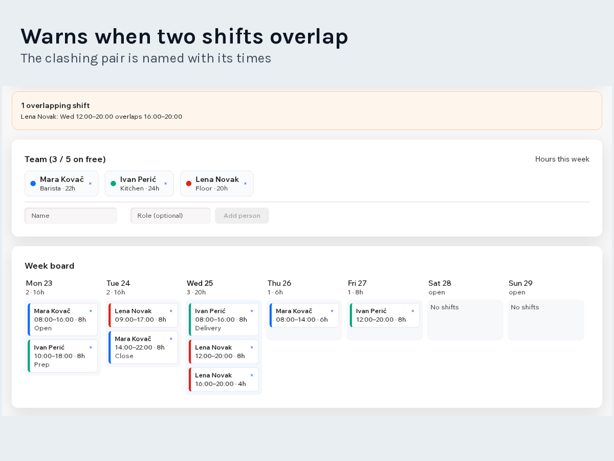

Shift Roster: Staff Schedule
Plan staff shifts week by week, with warnings
- A weekly board of staff, shifts and hours
- A warning when two shifts overlap
- Free: 5 staff and this week, with totals
- Premium: every week, reassign, print, CSV

What it does
Staff shifts usually live in a group chat and a photo of a paper rota. This app keeps the week in one place: a board with the days across the top, each person's shifts as cards, and the hours counted for everyone.
Add your team with a name, a role and a colour, then add shifts with a start and end time. A shift that runs past midnight is read as one shift, and when two shifts for the same person overlap the app says so, naming both times. Each day shows how many shifts and how many hours it holds, so a gap in cover is easy to spot.
The free plan covers up to five staff and the current week. Premium opens every past and future week, removes the staff limit, lets you reassign a shift to another person from the board, prints the week and exports it as CSV.
Everything is stored in your site's own dashboard. The app sends no email and needs no payment setup beyond the platform's own plan page. Premium is $5 a month, or $4 a month billed yearly, with a 14-day free trial.
Price
Free
- Up to 5 staff
- This week's board only
- Add and remove shifts
- Hours per person and per day
Premium
$5/month, or $4/month billed yearly ($48/year), 14-day free trial
- Unlimited staff
- Every week, 12 weeks either way
- Reassign a shift in one click
- Print the week and export CSV